Oorspronkelijk was sp het standaardpakket om in R met geografische data om te gaan. Dit pakket(samen met andere pakketten zoals raster) maakt van R een krachtig GIS-gereedschap. Echter, spis vandaag de dag wat gedateerd. Ik heb wat gelezen en gewerkt met R package sf dat bedoeld is om sp op te volgen. Dit pakket is onderdeel van R Simple Features, kan files makkelijk inlezen, topologische handelingen uitvoeren en files schrijven.
Ik ben erg onder de indruk van watsfkan; het lijkt alles te kunnen wat sp, rgdalen rgeos kunnen, maar op een meer moderne intutieve manier. Maar wat vooral aantrekkelijk is vansfis dat de ontwikkelaars van dit pakket aansluiten bij de ontwerp principes van Hadley Wickhams Tidyverse. Het zijn de volgende zaken die opvallen:
- Geografische objecten worden opgeslagen als data frames, waarbij de geometrische kenmerken in n list worden opgeslagen;
- Alle functies beginnen met
st_om het eenvoudig te maken; - Functies zijn pipe-vriendelijk;
dplyrentidyrwerken met desfobjecten;ggplot2is binnenkort in staat omsfobjecten direct te plotten.
Met deze kenmerken pastsf veel beter bij moderne data analyse-opzet dan sp. Je kunt nu direct metdplyr functies als mutate() of select() werken.
Pakketten die je voor onderstaande nodig hebt
Natuurlijk moeten we sf en tidyverse (waarin ggplot2, dplyr en tidyr zitten) openen. Daarnaast openen we ook viridis (voor palette-kleuren) en rvestpakket (om html-data van het web te halen).
library(sf)
library(tidyverse)
library(viridis)
library(rvest)Simple Features as data frames
Simple Features is een open source standaard voor de weergave van objecten (d.w.z. functies). Het eerste vignet voor het sf pakket beschrijft in detail de verschillende soorten functies die kunnen worden weergegeven (bijvoorbeeld POINT, LINESTRING, POLYGON, etc.) en hoe ermee te werken met de functies in sf.sf maakt gebruik van het bekende data frame om functies op te slaan. Het allereerste materiaal hieronder komt van van het eerste vignet.
In dit pakket worden functies opgeslagen als data frames van de sf klasse. Elke rij bestaat uit een functie/eenheid en elke kolom uit een attribuut/kenmerk. Het verschil met een normaal dataframe is dat er een extra list-kolom van de klasse sfc is toegevoegd waarin de geometrische kenmerken zijn opgeslagen.
Laten we beginnen met het laden van wat voorbeeldgegevens die in het pakket zitten. Dit is een vormbestand van provincies in North Carolina. Ik zal dit ook omzetten naar een sp object ter vergelijking.
Het resulterende sf object is in wezen slechts een data.frame met een extra kolom voor de geografische informatie.
[1] "sf" "data.frame"
Observations: 2
Variables: 15
$ AREA <dbl> 0.114, 0.061
$ PERIMETER <dbl> 1.442, 1.231
$ CNTY_ <dbl> 1825, 1827
$ CNTY_ID <dbl> 1825, 1827
$ NAME <fct> Ashe, Alleghany
$ FIPS <fct> 37009, 37005
$ FIPSNO <dbl> 37009, 37005
$ CRESS_ID <int> 5, 3
$ BIR74 <dbl> 1091, 487
$ SID74 <dbl> 1, 0
$ NWBIR74 <dbl> 10, 10
$ BIR79 <dbl> 1364, 542
$ SID79 <dbl> 0, 3
$ NWBIR79 <dbl> 19, 12
$ geometry <MULTIPOLYGON []> MULTIPOLYGON (((-81.47276 3..., M...
# A tibble: 2 x 15
AREA PERIMETER CNTY_ CNTY_ID NAME FIPS FIPSNO CRESS_ID BIR74
<dbl> <dbl> <dbl> <dbl> <fct> <fct> <dbl> <int> <dbl>
1 0.114 1.44 1825 1825 Ashe 37009 37009 5 1091
2 0.061 1.23 1827 1827 Alle~ 37005 37005 3 487
# ... with 6 more variables: SID74 <dbl>, NWBIR74 <dbl>, BIR79 <dbl>,
# SID79 <dbl>, NWBIR79 <dbl>, geometry <MULTIPOLYGON []>Het mooie hiervan is dat iedereen weet hoe te werken met data-frames in R. Dus deze sf objecten zijn eenvoudig te inspecteren en mee te spelen. Bovendien houdt dit de geometrie en attribuutgegevens bij elkaar op n plaats, d.w.z. ze staan in dezelfde rij van het gegevensframe. Vergelijk dat maar met sp, dat deze gegevens deze gegevens heel anders opslaat:
[1] "SpatialPolygonsDataFrame"
attr(,"package")
[1] "sp"
Formal class 'SpatialPolygonsDataFrame' [package "sp"] with 5 slots
..@ data :'data.frame': 2 obs. of 14 variables:
.. ..$ AREA : num [1:2] 0.114 0.061
.. ..$ PERIMETER: num [1:2] 1.44 1.23
.. ..$ CNTY_ : num [1:2] 1825 1827
.. ..$ CNTY_ID : num [1:2] 1825 1827
.. ..$ NAME : Factor w/ 100 levels "Alamance","Alexander",..: 5 3
.. ..$ FIPS : Factor w/ 100 levels "37001","37003",..: 5 3
.. ..$ FIPSNO : num [1:2] 37009 37005
.. ..$ CRESS_ID : int [1:2] 5 3
.. ..$ BIR74 : num [1:2] 1091 487
.. ..$ SID74 : num [1:2] 1 0
.. ..$ NWBIR74 : num [1:2] 10 10
.. ..$ BIR79 : num [1:2] 1364 542
.. ..$ SID79 : num [1:2] 0 3
.. ..$ NWBIR79 : num [1:2] 19 12
..@ polygons :List of 2
.. ..$ :Formal class 'Polygons' [package "sp"] with 5 slots
.. .. .. ..@ Polygons :List of 1
.. .. .. .. ..$ :Formal class 'Polygon' [package "sp"] with 5 slots
.. .. .. .. .. .. ..@ labpt : num [1:2] -81.5 36.4
.. .. .. .. .. .. ..@ area : num 0.114
.. .. .. .. .. .. ..@ hole : logi FALSE
.. .. .. .. .. .. ..@ ringDir: int 1
.. .. .. .. .. .. ..@ coords : num [1:27, 1:2] -81.5 -81.5 -81.6 -81.6 -81.7 ...
.. .. .. ..@ plotOrder: int 1
.. .. .. ..@ labpt : num [1:2] -81.5 36.4
.. .. .. ..@ ID : chr "1"
.. .. .. ..@ area : num 0.114
.. ..$ :Formal class 'Polygons' [package "sp"] with 5 slots
.. .. .. ..@ Polygons :List of 1
.. .. .. .. ..$ :Formal class 'Polygon' [package "sp"] with 5 slots
.. .. .. .. .. .. ..@ labpt : num [1:2] -81.1 36.5
.. .. .. .. .. .. ..@ area : num 0.0614
.. .. .. .. .. .. ..@ hole : logi FALSE
.. .. .. .. .. .. ..@ ringDir: int 1
.. .. .. .. .. .. ..@ coords : num [1:26, 1:2] -81.2 -81.2 -81.3 -81.3 -81.3 ...
.. .. .. ..@ plotOrder: int 1
.. .. .. ..@ labpt : num [1:2] -81.1 36.5
.. .. .. ..@ ID : chr "2"
.. .. .. ..@ area : num 0.0614
..@ plotOrder : int [1:2] 1 2
..@ bbox : num [1:2, 1:2] -81.7 36.2 -80.9 36.6
.. ..- attr(*, "dimnames")=List of 2
.. .. ..$ : chr [1:2] "x" "y"
.. .. ..$ : chr [1:2] "min" "max"
..@ proj4string:Formal class 'CRS' [package "sp"] with 1 slot
.. .. ..@ projargs: chr "+proj=longlat +datum=NAD27 +no_defs +ellps=clrk66 +nadgrids=@conus,@alaska,@ntv2_0.gsb,@ntv1_can.dat"Merk hier op dat de attribuutgegevens worden opgeslagen als een data.frame in het data slot en dat de functies afzonderlijk worden opgeslagen. Dit kan heel verwarrend zijn om direct mee te werken.
De geometrie lijst-kolom van een sf object is een object van klasse sfc en een extra klasse die overeenkomt met het geometrietype, in dit geval sfc_MULTIPOLYGON. Het is toegankelijk met st_geometrie(). Aanvullende informatie over de kenmerken, zoals het cordinatensysteem, wordt als attributen opgeslagen:
Geometry set for 2 features
geometry type: MULTIPOLYGON
dimension: XY
bbox: xmin: -81.74107 ymin: 36.23436 xmax: -80.90344 ymax: 36.58965
epsg (SRID): 4267
proj4string: +proj=longlat +datum=NAD27 +no_defs
[1] "sfc_MULTIPOLYGON" "sfc"
$class
[1] "sfc_MULTIPOLYGON" "sfc"
$precision
[1] 0
$bbox
xmin ymin xmax ymax
-81.74107 36.23436 -80.90344 36.58965
$crs
Coordinate Reference System:
EPSG: 4267
proj4string: "+proj=longlat +datum=NAD27 +no_defs"
$n_empty
[1] 0Tot slot zijn er individuele eenvoudige kenmerken sfg objecten met extra klassen die overeenkomen met het specifieke type eigenschap. De klassen XY en MULTIPOLYGON geven aan dat dit een tweedimensionale MULTIPOLYGON geometrie is.
[1] "XY" "MULTIPOLYGON" "sfg" Intern zijn deze sfg objecten vectoren voor punten, matrices voor LINESTRING objecten, en lijsten voor al het andere. Meer details zijn beschikbaar in de vignetten van het pakket.
Ondersteuning van Tidyverse
Wat we vooral van de vorige sectie hebben geleerd is dat sf-objecten data frames zijn! Aangezien data frames de kern vormen van de Tidyverse-pakketten, mag je veronderstellen dat de functies van Tidyverse pakketten van toepassing zouden moeten zijn op de geografische objecten van sf. Zeker, de makers van sf hebben methoden geleverd voor alle standaard dplyr en tidyr handelingen die we kennen en liefhebben. Verder ondersteunt de ontwikkelingsversie van ggpplot2 het plotten van sf objecten.
ggplot
Met sp moesten geografische objecten eerst worden geconverteerd naar dataframes (bijv. met fortify())) voordat ze met ggplot2 werden geplot (dat was betrekkelijk ingewikkeld allemaal). Maar omdatsf-objecten al dataframes zijn, kunnen ze met behulp van de nieuwe geom_sf() direct worden geplot.
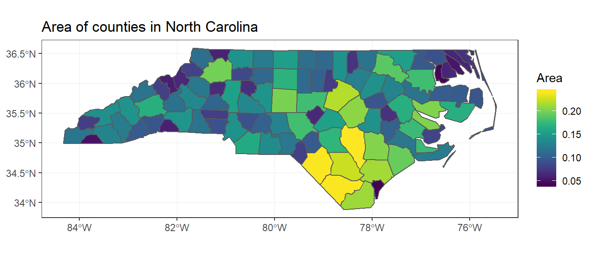
Daarnaast kan de nieuwe coord_sf() gebruikt worden om deze kenmerken in een andere projectie te plotten, bijvoorbeeld een Albers equal area projectie (in de geografie worden verschillende systemen gebruikt).
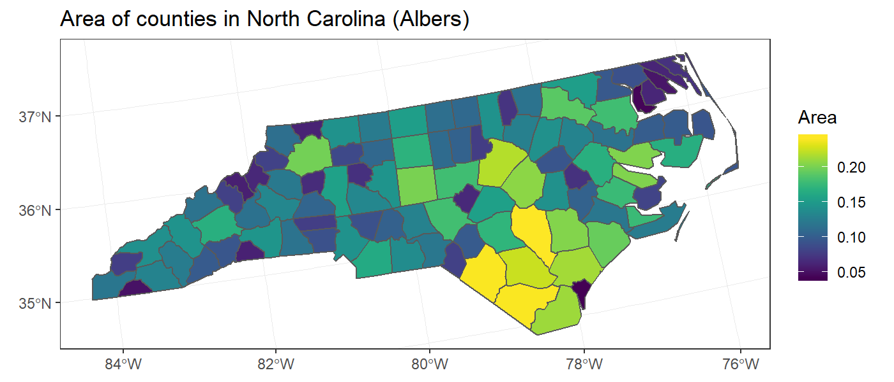
dplyr
dplyr is de gouden standaard voor datamanipulatie en biedt een verscheidenheid aan voordelen ten opzichte van basis R-functies. Het is speciaal ontworpen voor het werken met data.frame-achtige objecten zoals die uit het sf pakket. De volgende werkwoorden werken alleen op de attribuutgegevens en laten de geometrien onaangeroerd:
select()behoudt de gespecificeerde variabelen, eventueel onder een andere naamrename()een variabele een andere naam geven en alle andere ongewijzigd latenfilter()returns the rows that match the given conditionsmutate()voegt nieuwe variabelen toe op basis van bestaande variabelentransmute()creert nieuwe variabelen en laat bestaande variabelen vallenarrange()sorteert op basis van de gegeven variabelenslice()selecteert rijen op basis van rijnummersample_n()trekt steekproeven met n kenmerken willekeurig
Hieronder zien we enkele voorbeelden:
Simple feature collection with 3 features and 2 fields
geometry type: MULTIPOLYGON
dimension: XY
bbox: xmin: -79.45597 ymin: 33.94867 xmax: -78.11374 ymax: 35.31512
epsg (SRID): 4267
proj4string: +proj=longlat +datum=NAD27 +no_defs
name area_km2 geometry
1 Sampson 2410 MULTIPOLYGON (((-78.11377 3...
2 Robeson 2400 MULTIPOLYGON (((-78.86451 3...
3 Columbus 2400 MULTIPOLYGON (((-78.65572 3...Merk op dat de geometrie steeds ongewijzigd blijft.
[1] "area_km2" "geom" We kunnen een willekeurige steekproef van functies uit de set nemen met behulp van sample_n():
# A tibble: 4 x 2
AREA geometry
<dbl> <MULTIPOLYGON []>
1 0.111 (((-79.24619 35.86815, -79.23799 35.83725, -79.54099 35.83699~
2 0.219 (((-78.92107 35.57886, -78.99881 35.60132, -78.93889 35.76144~
3 0.203 (((-77.10377 35.55019, -77.11939 35.5855, -77.14835 35.598, -~
4 0.121 (((-79.68596 34.80526, -79.91995 34.80792, -79.90142 34.85241~Het is ook mogelijk om functies uit sf te gebruiken die inwerken op de geometrie-kolom binnen een mutatie-instructie. Als er bijvoorbeeld nog geen gebiedskolom bestaat, kan men een gebiedskolom maken met behulp van st_area():
# A tibble: 6 x 4
name area_m2 area geometry
<fct> <S3: unit> <dbl> <MULTIPOLYGON []>
1 Ashe 113738860~ 0.114 (((-81.47276 36.23436, -81.54084 36.27251~
2 Allegha~ 61107726~ 0.061 (((-81.23989 36.36536, -81.24069 36.37942~
3 Surry 142348991~ 0.143 (((-80.45634 36.24256, -80.47639 36.25473~
4 Curritu~ 69454629~ 0.07 (((-76.00897 36.3196, -76.01735 36.33773,~
5 Northam~ 152074053~ 0.153 (((-77.21767 36.24098, -77.23461 36.2146,~
6 Hertford 96772795~ 0.097 (((-76.74506 36.23392, -76.98069 36.23024~Gegroepeerde handelingen
dplyr staat ook toe om in groepen te werken op sf objecten. group_by()groepeert een gegevensframe op basis van variabelen in de tabel. Vervolgens wordt summarise() gebruikt om groepssamenvattingen van de gegevens uit te voeren. Laten we beginnen met het toevoegen van een willekeurige groeperingsvariabele en vervolgens het gemiddelde van de gebieden over deze variabele berekenen.
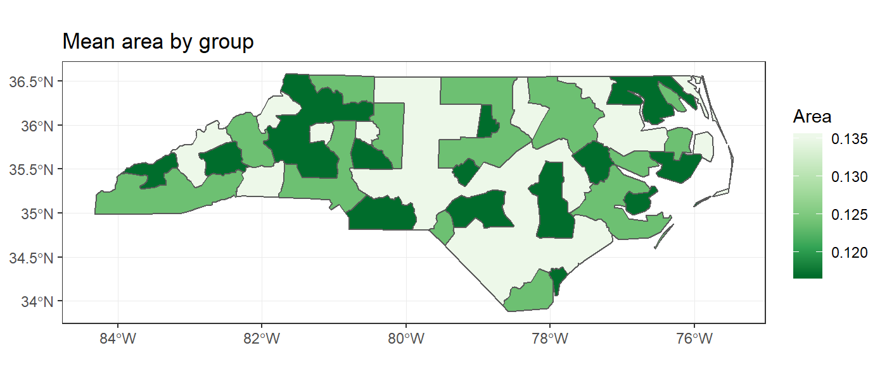
Merk op dat naast de attribuutgegevens die worden geaggregeerd, ook de geometrien zijn geaggregeerd. Alle geometrien in elke groep zijn samengevoegd en de grenzen tussen aangrenzende geometrien zijn opgelost. Intern wordt de functie st_union() gebruikt om dit te bereiken.
Net als bij een normaal gegevensframe kunnen gegroepeerde filtering en mutatie worden uitgevoerd op sf objecten. Bijvoorbeeld, om de proportionele verdeling van geboorten tussen provincies binnen elke groep te berekenen, gebruikt u een gegroepeerde mutate():
# A tibble: 100 x 4
group AREA area_prop geometry
<chr> <dbl> <dbl> <MULTIPOLYGON []>
1 A 0.114 12.6 (((-81.47276 36.23436, -81.54084 36.27251, -~
2 C 0.061 12.6 (((-81.23989 36.36536, -81.24069 36.37942, -~
3 C 0.143 12.6 (((-80.45634 36.24256, -80.47639 36.25473, -~
4 B 0.07 12.6 (((-76.00897 36.3196, -76.01735 36.33773, -7~
5 B 0.153 12.6 (((-77.21767 36.24098, -77.23461 36.2146, -7~
6 A 0.097 12.6 (((-76.74506 36.23392, -76.98069 36.23024, -~
7 A 0.062 12.6 (((-76.00897 36.3196, -75.95718 36.19377, -7~
8 A 0.091 12.6 (((-76.56251 36.34057, -76.60424 36.31498, -~
9 C 0.118 12.6 (((-78.30876 36.26004, -78.28293 36.29188, -~
10 B 0.124 12.6 (((-80.02567 36.25023, -80.45301 36.25709, -~
# ... with 90 more rowsOm alleen landen te behouden binnen groepen die een groter gebied hebben dan een bepaalde drempel, kan een gegroepeerde filter() worden gebruikt:
# A tibble: 38 x 3
group AREA geometry
<chr> <dbl> <MULTIPOLYGON []>
1 B 0.07 (((-76.00897 36.3196, -76.01735 36.33773, -76.03288 36~
2 B 0.153 (((-77.21767 36.24098, -77.23461 36.2146, -77.29861 36~
3 B 0.124 (((-80.02567 36.25023, -80.45301 36.25709, -80.43531 3~
4 B 0.153 (((-79.53051 36.24614, -79.53058 36.23616, -80.02567 3~
5 B 0.072 (((-78.49252 36.17359, -78.51472 36.17522, -78.51709 3~
6 B 0.081 (((-81.80622 36.10456, -81.81715 36.10939, -81.82231 3~
7 B 0.064 (((-81.94135 35.95498, -81.9614 35.93922, -81.94495 35~
8 B 0.128 (((-78.25455 35.81553, -78.26685 35.84838, -78.30841 3~
9 B 0.17 (((-79.53782 35.89097, -80.0426 35.91681, -80.0381 36.~
10 B 0.111 (((-79.24619 35.86815, -79.23799 35.83725, -79.54099 3~
# ... with 28 more rowsSamenvoegen
dplyr heeft een reeks functies voor het samenvoegen van gegevensframes op basis van gedeelde kolommen. Deze functies zijn allemaal gemplementeerd in sf en zijn een geweldige manier om extra attribuutgegevens uit andere bronnen aan uw ruimtelijke gegevens toe te voegen. Het is echter alleen mogelijk om een sf object te verbinden met een gewoon data.frame. Je kunt niet twee sf objecten met elkaar verbinden.
Laten we beginnen met enkele county-level populatiegegevens van Wikipedia af te halen.
Nu voegen we deze populatiegegevens samen met onze ruimtelijke gegevens en plotten ze.
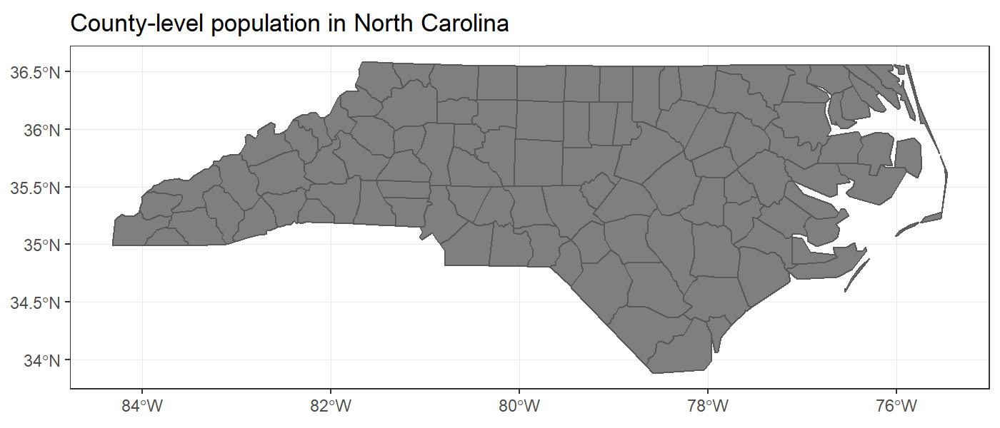
Alle andere verbindingsfuncties (bijv. left_join(), anti_join(), etc.) werken op dezelfde manier. Als het tweede argument van een van deze functies een sf object is, en geen normaal gegevensframe, zal er een fout optreden. Vermoedelijk komt dit omdat het onduidelijk is hoe de twee verschillende geometrien gecombineerd moeten worden, hoewel er wel wat discussie lijkt te zijn over hoe je verbindingen met twee sets van geometrien kunt implementeren:
Error: y should be a data.frame; for spatial joins, use st_joinDeze dplyr functies zijn allemaal voor het verbinden op basis van attribuutgegevens. Als je op zoek bent naar een ruimtelijke verbinding (bijv. twee sf objecten op basis van een snijpunt van geometrien) dan moet je de functie st_join()gebruiken.
tidyr handelingen
De tidyr werkwoorden gather() en spread() worden gebruikt om de data frames te transformeren van breed naar lang formaat of vice versa. Bijvoorbeeld, zeg dat u gegevens wilt opslaan over het BBP voor alle landen en een set van jaren. Dit kan worden opgeslagen in een lang formaat (met kolommen land, jaar en gdp), wat als een tidy formaat wordt beschouwd, of in een breed formaat (met kolommen land, gdp2000, gdp2001, .), wat beter is voor weergavedoeleinden. tidyr kan overstappen naar een ander format en nu kan dit ook worden gedaan met sf objecten.
Als we de North Carolina dataset als voorbeeld nemen, zijn BIR74 en BIR79 het aantal geboorten in de provincie in respectievelijk 1974 en 1979. Met gather() kunnen we dit gemakkelijk omzetten in een lang formaat:
Simple feature collection with 6 features and 3 fields
geometry type: MULTIPOLYGON
dimension: XY
bbox: xmin: -81.74107 ymin: 36.23388 xmax: -80.43531 ymax: 36.58965
epsg (SRID): 4267
proj4string: +proj=longlat +datum=NAD27 +no_defs
county year births geometry
1 Ashe BIR74 1091 MULTIPOLYGON (((-81.47276 3...
2 Alleghany BIR74 487 MULTIPOLYGON (((-81.23989 3...
3 Surry BIR74 3188 MULTIPOLYGON (((-80.45634 3...
4 Ashe BIR79 1364 MULTIPOLYGON (((-81.47276 3...
5 Alleghany BIR79 542 MULTIPOLYGON (((-81.23989 3...
6 Surry BIR79 3616 MULTIPOLYGON (((-80.45634 3...Merk op dat de attribuutgegevens mooi getransponeerd zijn. Het resultaat hiervan is dat elke functie twee rijen heeft en dat de functiegeometrien gedupliceerd zijn. Voor mij lijkt dit vreemd om dezelfde geometrie op meerdere plaatsen op te slaan, dus ik ben niet zeker van wat deze gather() functie op sf objecten oplevert.
We kunnen dit terugzetten naar het originele brede formaat met spread():
Simple feature collection with 3 features and 3 fields
geometry type: MULTIPOLYGON
dimension: XY
bbox: xmin: -81.74107 ymin: 36.23388 xmax: -80.43531 ymax: 36.58965
epsg (SRID): 4267
proj4string: +proj=longlat +datum=NAD27 +no_defs
county BIR74 BIR79 geometry
1 Alleghany 487 542 MULTIPOLYGON (((-81.23989 3...
2 Ashe 1091 1364 MULTIPOLYGON (((-81.47276 3...
3 Surry 3188 3616 MULTIPOLYGON (((-80.45634 3...De blog (hier verwijzingHJ) biedt een aanvullende introductie op het sf-pakket. Het bevat een tutorial die jou door een aantal basisprincipes van het pakket leidt, waaronder lezen en schrijven van/naar shapefiles, herprojecten, afdrukken met ggplot, filteren en andere datavormen vinden met dplyr. Het maakt gebruik van een dataset van FiveThirtyEight die bijhoudt hoe vaak elk lid van het Amerikaanse Congres heeft gestemd in lijn met President Trumps. We zullen sf gebruiken om deze gegevens samen te voegen met een ander bestand om ze ruimtelijk te verkennen. Voordat u begint, moet u de benodigde datasets downloaden en in uw werkmap plaatsen. Laad vervolgens de benodigde pakketten voor deze tutorial.
Het lezen van gegevens in R met sf is een relatief eenvoudige taak. Het ondersteunt het direct importeren van eenvoudige functies uit een PostGIS database met verschillende R database tools. In dit geval lezen we gewoon uit een shapefile in onze werkmap.
Reading layer `congressional_districts' from data source `H:\MapsinR\congressional-trump-scores-master\congressional_districts.shp' using driver `ESRI Shapefile'
Simple feature collection with 433 features and 2 fields
geometry type: MULTIPOLYGON
dimension: XY
bbox: xmin: -124.7631 ymin: 24.5231 xmax: -66.9499 ymax: 49.38436
epsg (SRID): 4269
proj4string: +proj=longlat +datum=NAD83 +no_defs
Simple feature collection with 6 features and 2 fields
geometry type: MULTIPOLYGON
dimension: XY
bbox: xmin: -124.4096 ymin: 33.87981 xmax: -114.0428 ymax: 42.00105
epsg (SRID): 4269
proj4string: +proj=longlat +datum=NAD83 +no_defs
district state geometry
1 40 CA MULTIPOLYGON (((-118.281 34...
2 2 CA MULTIPOLYGON (((-122.4463 3...
3 31 CA MULTIPOLYGON (((-117.7044 3...
4 10 CA MULTIPOLYGON (((-121.557 37...
5 9 CA MULTIPOLYGON (((-121.8513 3...
6 4 NV MULTIPOLYGON (((-119.4398 3...Om de attributen geassocieerd met deze polygonen te bekijken of te manipuleren, kunnen we het object eenvoudigweg behandelen als een conventioneel R data frame. De basisplotfunctie geeft u een snel en handig overzicht van elk attribuut dat in kaart is gebracht over alle polygonen. Vervolgens moeten we de stemgegevens van elk lid van het Huis van Afgevaardigden laden. Deze gegevens zitten in een ander databestand.
X.1 X name chamber party state district trump_score
1 1 1 David G. Valadao House R CA 21 1.000
2 2 2 Carlos Curbelo House R FL 26 0.935
3 3 3 Erik Paulsen House R MN 3 1.000
4 4 4 Barbara Comstock House R VA 10 0.970
5 5 5 Darrell E. Issa House R CA 49 1.000
6 6 6 Edward R. Royce House R CA 39 0.970
trump_margin predicted_score trump_plus_minus
1 -0.155 0.296 0.704
2 -0.161 0.284 0.652
3 -0.094 0.428 0.572
4 -0.100 0.413 0.556
5 -0.075 0.478 0.522
6 -0.086 0.449 0.521De mensen van FiveThirtyEight hebben een reeks samenvattende statistieken berekend die bij elke Vertegenwoordiger hoort en gekoppeld aan de stemrealiteit van Trumps standpunt over die maatregel. Zij hebben zo een Trump Score (Trump_score) berekend die ons vertelt welk deel van de tijd elke wetgever in lijn met de president heeft gestemd. We zijn vooral geinteresseerd in het visualiseren van deze variabele. Om deze variabele in kaart te brengen zullen we de tabelvormige stemgegevens moeten samenvoegen met onze districtspolygonen. Omdat we sf objecten kunnen behandelen als data frames, is het eenvoudig om dit te doen met behulp van de join-functies van dplyr.
Nu we beide datasets hebben gecombineerd tot een sf-object, kunnen we ze in kaart brengen met ggplot. Wanneer je ggplot een sf-object geeft, weet het commando geom_sf de punten, lijnen of veelhoeken te tekenen op basis van het bekende tekstgeometrieveld in het object. Het andere sf-specifieke ggplot commando in dit voorbeeld is coord_sf, waarmee je een alternatieve projectie voor je kaart kunt specificeren. Je kunt een co?rdinatensysteem selecteren aan de hand van zijn epsg-code, die te vinden is op spatialreference.org.
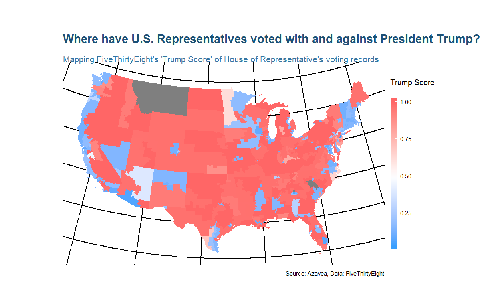
De kaart versterkt ons begrip van het sterk partijdige karakter van het Congres. De meeste troefscores liggen aan de uitersten, omdat maar weinig wetgevers zich bereid hebben getoond om met hun partijlijnen te breken.
Onze volgende stap zal zijn om in te zoomen op een bepaald deel van het land. We zullen dplyr gebruiken om slechts drie staten in het hoger gelegen Midwesten (Minnesota, Wisconsin en Iowa) in kaart te brengen. Onderweg zullen we ook een sf object opnieuw projecteren, polygon centroiden extraheren, en die centroiden gebruiken om elk district van een label te voorzien.
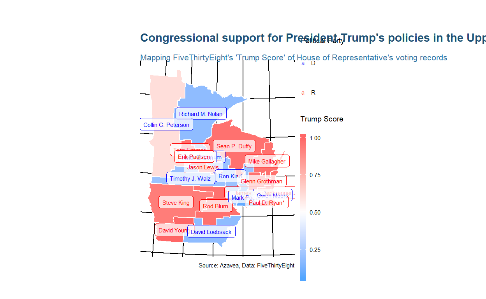
Dit voorbeeld laat zien hoe je sf-functies in magrittr pijpleidingen kunt nestelen met behulp van de %>% operator waarmee een gebruiker van een ander pakket waarschijnlijk bekend is. Vervolgens zul je zien hoe je dplyr kunt gebruiken om polygonen op te lossen. Laten we eens kijken naar de originele kaart van de hele Verenigde Staten, maar deze keer voegen we de Trump Scores samen tot het niveau van de Staat.
Simple feature collection with 6 features and 3 fields
geometry type: GEOMETRY
dimension: XY
bbox: xmin: -124.4096 ymin: 30.22333 xmax: -71.78699 ymax: 42.05059
epsg (SRID): 4269
proj4string: +proj=longlat +datum=NAD83 +no_defs
# A tibble: 6 x 4
state avg_trump_score districts geometry
<chr> <dbl> <int> <GEOMETRY []>
1 AL 0.861 7 MULTIPOLYGON (((-88.05338 30.50699,~
2 AR 0.992 4 POLYGON ((-94.48558 33.65331, -94.4~
3 AZ 0.650 9 POLYGON ((-109.0476 32.42638, -109.~
4 CA 0.377 53 MULTIPOLYGON (((-119.5773 33.27858,~
5 CO 0.615 7 POLYGON ((-104.9434 40.99808, -104.~
6 CT 0.147 5 MULTIPOLYGON (((-73.63057 40.98071,~We kunnen de bekende dplyr-syntax gebruiken om de districten te groeperen op staat en samenvattende statistieken te berekenen. Omdat sf-objecten zo goed integreren met dplyr, groepeert de functie automatisch de ruimtelijke gegevens samen met de tabel. Het eindresultaat is vergelijkbaar met dat van de geoprocessing dissolve tool in een traditioneel desktop GIS.
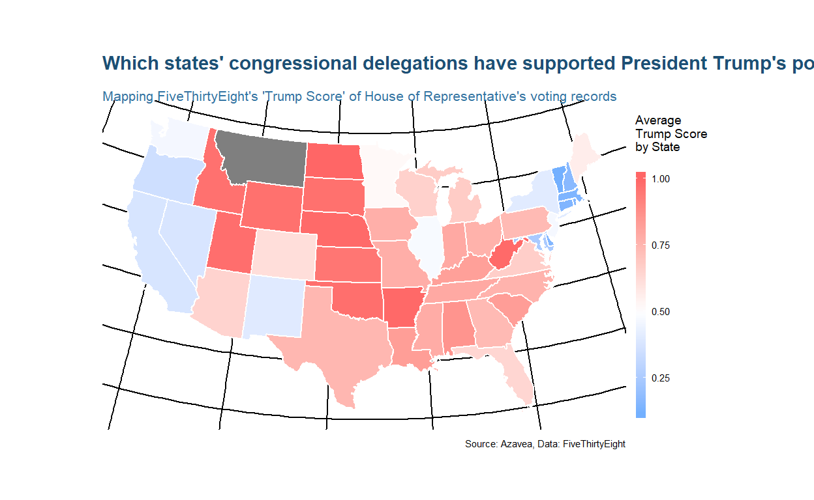
tmap
Naast sfis tmapeen ander R-pakket dat jou kan ondersteunen bij het maken van geografische kaarten. Met het tmap-pakket kunnen thematische kaarten met grote flexibiliteit worden gegenereerd. De syntaxis voor het maken van plots is ook hier vergelijkbaar met die van ggplot2, maar dan op maat gemaakt voor kaarten. Het pakket tmapbiedt een instructief vignet dat is bedoeld voor degenen die binnen een paar minuten aan de slag willen met tmap. Een meer gedetailleerde beschrijving van tmap is te vinden in een artikel gepubliceerd in het Journal of Statistical Software (JSS), dat tmap versie 1.11-2 beschrijft. De wijzigingen in versie 2.0 worden beschreven in vignette("tmap-changes-v2").
Een goede plek om te beginnen is om een kaart van de wereld te maken. Na installeren tmap, moeten we met de volgende coderegels de onderstaande kaart maken:
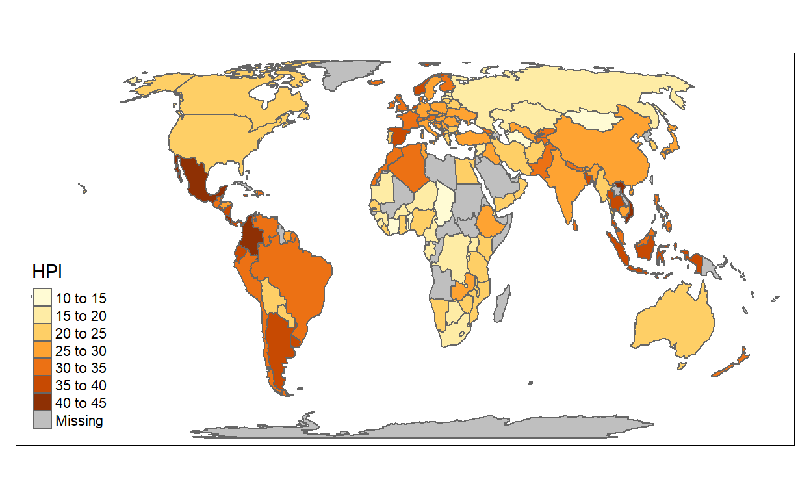
Het object Wereld is een ruimtelijk object van klasse sf uit het [sf-pakket] (https://CRAN.R-project.org/package=sf); het is een data.frame met een speciale kolom die een geometrie voor elke rij bevat, in dit geval polygonen. Om het in tmap te tekenen, moet je het eerst specificeren met tm_shape. Plot-lagen kunnen worden toegevoegd met de + operator, in dit geval tm_polygonen. Er zijn veel laagfuncties in tmap, die gemakkelijk te vinden zijn in de documentatie door hun tm_ prefix. Zie ook `?tmap-element``.
Meerdere vormen en lagen
Een vorm is een ruimtelijk object (met een klasse van sf, sp of raster). Meerdere vormen en ook meerdere lagen per vorm kunnen worden uitgezet:
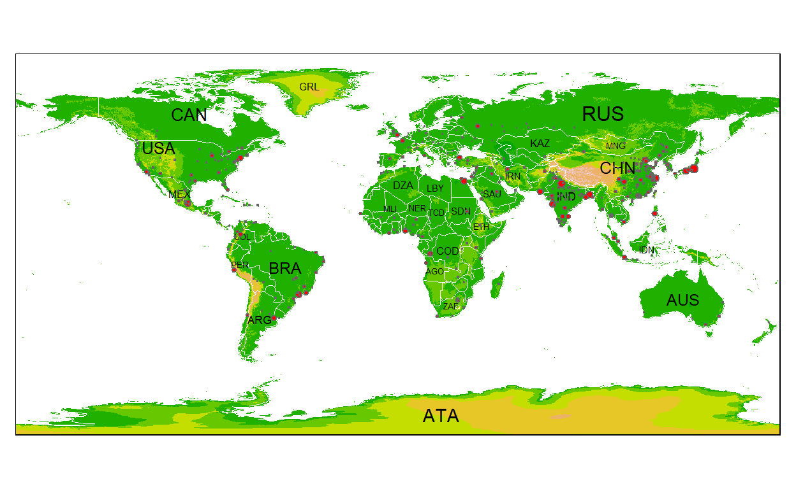
Facetten
Facetten kunnen op drie manieren worden gemaakt:
- Door meerdere variabele namen toe te kennen aan n esthetiek:
- Door de ruimtelijke gegevens te splitsen met het
byargument vantm_facets:
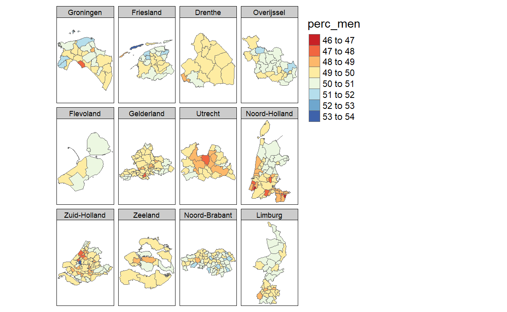
- Door gebruik te maken van de
tmap_arrangefunctie:
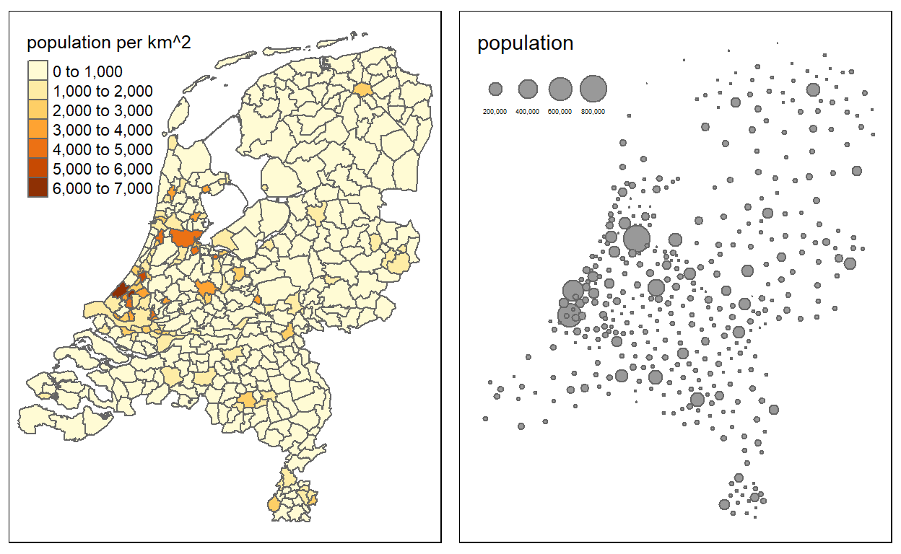
Snelle thematische kaart
Kaarten kunnen snell worden gemaakt met slechts n functie op te roepen. Deze functie is qtm: